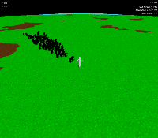
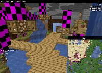
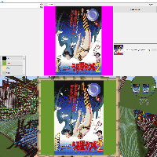
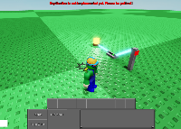

When I'm not doing school work or working, I like to do programming in my free time. While I haven't released anything, I do have many prototypes. Listed below are a couple of projects I'm more proud of compared to others:
-

An untitled real time strategy game written in Java from
the ground up using LWJGL. While the game currently isn't
anything to write home about, what I've been focusing on
in it is a custom game engine dubbed "Colibris."
-

The start of an external Minecraft map editor. Using the
same engine mentioned previously, this program can render
maps and do very basic map manipulation.
-

Another Minecraft related project, this is the most recent
larger project I've been working on. It allows importing
images, editing them, and then exporting them to a format
that can be imported into the game. Currently, the only
supported way is to use the mod
Litematica.
-

Made in ROBLOX and titled "Wiring", this project in its
current state allows you to create basic circuts and
interact with them using some select IO components.